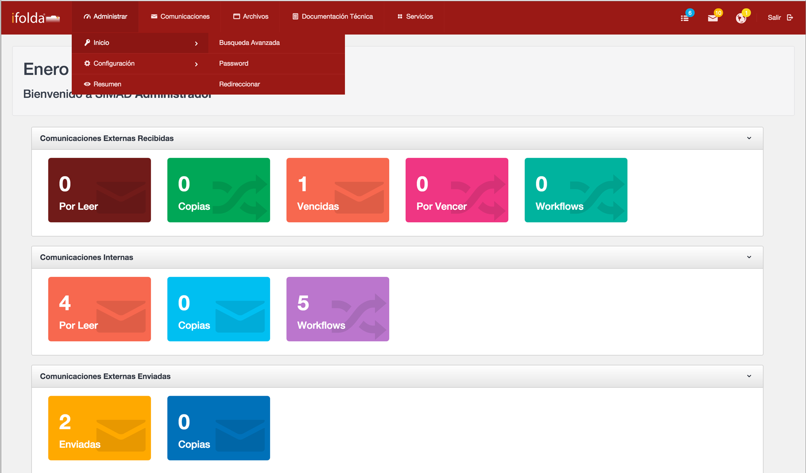
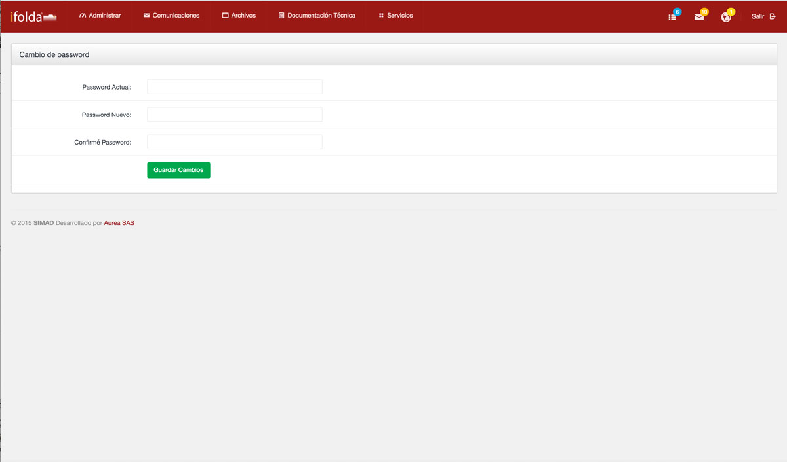
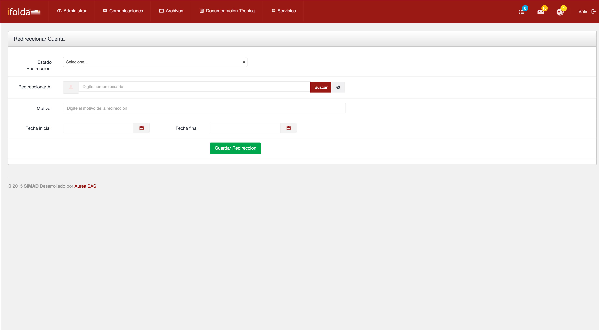

El módulo de Inicio facilita el acceso rapido a la información de los distintos módulos además de facilitar el manejo de la cuenta de usuario y hacer una revisión de las tareas pendientes.
Búsqueda Avanzada Ir al Inicio

Permite realizar la búsqueda de documentos en los módulos de archivo y comunicaciones en el sistema SIMAD.
Para realizar una Busqueda Avanzada en en el sistema Simad, realice alguno de los siguientes pasos:
- El sistema lo llevara a la lista de documentos que pertenecen a esa búsqueda.
- Haga clic en el registro encontrado para acceder a el.
- Si desea borrar los datos digitados haga clic en deshacer para escribir nuevos datos.
PasswordIr al Inicio

Permite realizar el cambio de password de ingreso a la aplicación del usuario actualmente conectado en el sistema SIMAD
Para modificar el Password de usuario en el sistema, realice los siguientes pasos:
- Recuerde que el password debe ser mínimo de 8 caracteres, debe contener números, letras y caracteres especiales, no debe coincidir con el password anterior.
- Mensualmente el sistema le pedirá el cambio de password para seguridad.
RedireccionarIr al Inicio

Permite redireccionar la correspondencia interna y recibida a otro usuario durante un periodo de tiempo determinado, el sistema enviará una copia al usuario a quien está redireccionado y dejará otra copia en la cuenta original.
Para redireccionar la información a otro usuario en el sistema, realice los siguientes pasos:
- Para dejar de redireccionar la cuenta haga clic en Estado de redirección y seleccione inactiva, haga clic en guardar y el sistema dejara de redireccionar sus comunicaciones.